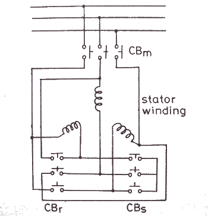
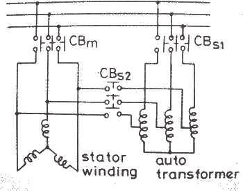
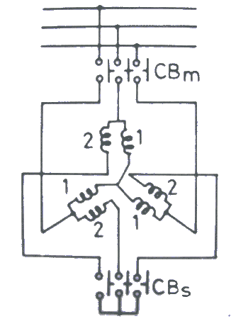

Before discussing about the induction motor drives we have to understand and know about induction motors. In very simple words induction motors can be described as a three phase, self starting constant speed ac motors. The reason of describing induction motors as constant speed is because normally these motors have a constant speed depending on the frequency of the supply and the no of windings. In the past it was not possible to control the speed of the induction motors according to the need. That’s why their use was limited and despite having many a motors they advantages over dc motors they could not be used because of this disadvantage. But at the field of drivers have improved due to the availability of thyristor or SCR?">thyristors, power transistors, IGBTs and GTOs the variable speed induction motor drives have been invented. Though the cost of these drivers are more than dc driver, but still the use of induction motors are increasing and they are replacing dc motors because of their advantages. While discussing about this topic we will look through the starting, braking and speed control of induction motors.
Starting of Induction Motors
We know that the induction motor is self starting i.e when the supply is given to the motor it starts to rotate without any external help. When an induction motor is started as there is no resistance initially (i.e, during starting), there is a tendency of huge electric current flow through the rotor circuit which may damage the circuit permanently. To overcome this problem various methods have been introduced to limit the starting current. Some of the methods are
1) Star delta starter
2) Auto- transformers starter
3) Reactor starter
4) Saturable reactor starter
5) Part winding starter
6) ac voltage controller starter
7) Rotor resistance starter is used for starting of wound rotor motor.
The induction motor drives are normally designed to run on delta connection, but during starting the supply is given from star connection because then the starter voltage and electric current reduces by 1/√3 times than the delta connection. When the motor reaches a steady state speed the connection changes from star to delta connection.

Another type of starting method of induction motors is the Auto transformer starting. Since we know that the torque is proportional to square of the voltage. By auto transformers the starting voltage and electric current are reduced to overcome the problem of overheating due to very high electric current flow. During starting the ratio of the transformer is set in a way that the starting electric current does not exceed the safe limit. Once the induction motor starts running and reaches a steady state value, the autotransformer is disconnected from the supply. The circuit diagram is given here with

Another method of starting is softstart using saturable reactor drivers. In this method high reactance is introduced into the circuit so that the starting torque is closed to zero. Now the reactance is reduced smoothly during starting and the starting electric current increases and the torque also varies steplessly. In this method the motor starts without any jerk and the acceleration is smooth, that’s why its called soft start also.
Reactor Starting of Induction Motor
Unbalanced starting scheme for soft start is another type of starting method where the impedance is introduced only in one of the supply phases. During starting the impedance is kept very high so that the motor operates as a single phase motor, the speed torque characteristics at that time is similar to curve A in the graph. When the speed attains a steady state value the impedance is removed completely, at that time the curve is similar to B, which is the natural characteristics of the matine. This starting method is also without any jerk and the operation is very smooth.
Variable Impedance Starting of Induction Motor
Part winding starting method is special for squirrel-cage induction motors. In this method two or more starter winding are connected in parallel. When the motor starts, any one of the winding is connected as a result the starter impendence is increased and starting electric current is reduced. When the steady speed is acquired by the motor both the windings are connected.

Specially for wound rotor motors. Rotor resistance starter is used. In this method external resistors are used in the rotor circuit to limit the starting current. Maximum value of resistance is chosen to limit the electric current at zero speed within the safe value. As the speed increases, the sectional resistance is the temperature rise is lower than other methods of starting high acceleration, frequent starts and stops starting with heavy loads can be done with this type of starting method.
Rotor Resistance Starting
Braking of Induction Motors
When it comes to controlling an electric machine by electric drivers braking is a very important term because it helps to decrease the speed of the motor according to will and necessity.(strong) braking of induction motors (/strong) can be classified mainly in three types
1) Regenerative braking
2) plugging or reverse voltage braking
3) Dynamic braking which can be further classified as
a) ac dynamic braking
b) self-excited braking using capacitors
c) dc dynamic braking
d) zero sequence braking
To explain that regeneration braking for induction motor, we can take help of the equation
Pin = 3 N Is Cos&thetas
here &thetas is the phase angle between the stator voltage and stator current, the simple words whenever this phase angle exceeds 90° (i.e &thetas>90°) regenerative braking can take place. To explain this more clearly and easily we can say that whenever the speed of the rotor exceeds synchronous speed, regeneration braking occurs. That is because whenever the rotor rotates at a speed more than synchronous speed there is a reverse field occurs which opposes the normal rotation of the motor and therefore braking takes place. Main disadvantage of this type of braking is that the speed of the motor has to exceed synchronous speed which may not be possible every time. To acquire regenerative braking at a lower speed than synchronous speed, variable frequency source can be used.

Regenerative Braking
Plugging of induction motors is done by interchanging any two of the supply terminals. When the terminals are reversed the operation of the machine changes from motoring to plugging. From technical point of view and for better understanding it can be said that the slip changes from ‘s’ to (2-s), which indicates that due to reversal of the terminals the torque also changes its direction and braking occurs
Induction Motor Braking
The first classification of dynamic braking of induction motors is ac dynamic braking any one of the supply phase is disconnected from the supply and then it is either kept open or connected with the other phase. The first type is known as two lead connection and the second one is known as three lead connection. To understand this braking method clearly we can assume the system to be a single phase system. Now the motor can be considered to be fed by positive and negative sequence voltages. That’s why when the rotor resistance is high the net torque is negative and braking can be acquired.
Induction Motor Drive
Sometimes capacitors are kept permanent by connected across the supply terminals of the motor. This is called self-excited braking using capacitors of induction motors. This type of braking works mainly by the property of the capacitors to store energy. Whenever the motor is disconnected from the supply the motor starts to work as a self-excited induction generator, the power comes from the capacitors connected across the terminals. The values of the capacitor are so chosen that they are sufficient to make the motor work as an induction generator after being disconnected from the supply. When the motor works as an induction generator the produced torque opposes the normal rotation of the motor and hence braking takes place.

Self excited braking of induction motor
Another type of dynamic braking is dc dynamic braking. In this method the stator of running induction motor drives is connected to dc supply. The consequences of connecting a dc supply to the stator is as follow, the dc electric current produces a stationary magnetic field, in the rotor keeps rotating and as a result there is a induced voltage in the rotor winding, therefore the machine works as a generator which opposes the motion of the motor and braking is acquired

Speed Control of Induction Motors
We have discussed about the starting and braking of induction motors but what about controlling the speed during the running time.(strong) speed control of induction motors(strong) can be done in six methods which are
i) Pole changing
ii) Stator voltage control
iii) Supply frequency control
iv) Eddy –current coupling
v) Rotor resistance control
vi) Slip power recovery
We know that the speed of the induction motor is inversely proportional to number of poles. So it is possible to increase or decrease the speed of the induction motor if the number of the poles are decreased or increased respectively. The motor in which the provision of changing the number of poles is present, they are called ‘pole changing motor’ or ‘multi –speed motor’.
Another method of controlling the speed of induction motor drives is the stator voltage control. Stator voltage is directly responsible for the rotating speed of the rotor. Torque is proportional to voltage squared and the electric current is proportional to the voltage. So, if the stator voltage is reduced the speed reduces and similarly if the stator voltage is increased the speed also increases.
voltage
control" width="350" height="294" class="size-full wp-image-3951" /> Starter Voltage ControlThe speed of an induction motor is proportional to the product of the supply frequency and air gap flux. But as there is a chance of magnetic saturation while decreasing the supply frequency, that’s why not only the frequency but the v/f ( i. e the ratio of supply voltage and frequency ) is controlled and this ratio is tried to be kept constant. And if the speed is needed to be changed the ratio of v/f is changed accordingly.
Variable Frequency Control of Induction Motor
The eddy current speed control method is done by placing an eddy current clutch between an induction motor is running at a fixed speed and the variable speed load. Now what is this eddy current clutch? It is nothing but an induction motor drives in which both stator and the rotor are allowed to rotate. The rotor is coupled with the main induction motor. When eddy currents are produced in the rotor drum, their interaction with the stator field and a torque is produced which rotates the main motor. By controlling the dc electric current through the stator winding the speed of the motor can be controlled.
Depending on the rotor resistance, the speed of the rotor falls or increases. The variation of speed torque characteristics with respect to change in rotor resistance is shown in the figures below. This speed controlling method is better than many other methods because of low cost.
Rotor Resistance Control
 by
by {kind=link}
{kind=link}
{kind=link}
{kind=link}
{kind=link}
{kind=link}
{kind=link}
{kind=link}
{kind=link}
{kind=link}
{kind=link}